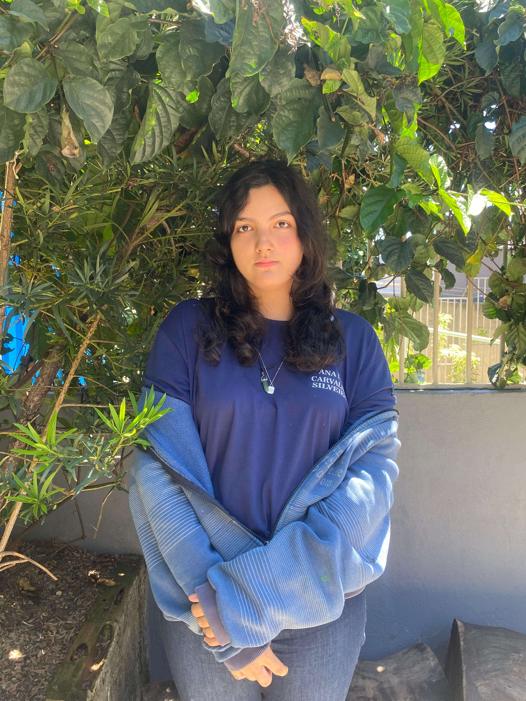

título

No curso, Izabella aprendeu de tudo um pouco sua maior dificuldade é AMDC, sua maior facilidade é HTML/CSS o que ela mais gosta é HTML/CSS o curso ira influenciar pois irá seguir a carreira, o que mais se orgulha de aprender é também HTML/CSS, para ela o que é mais importante é entender o impacto da tecnologia na sociedade, ela nunca teve medo de não consiguir acompanhar o ritmo da turma, o seu conselho é se esforçar até o fim, para ela o curso não influênciou nos desafios da sua vida.
Descrição do portifolio